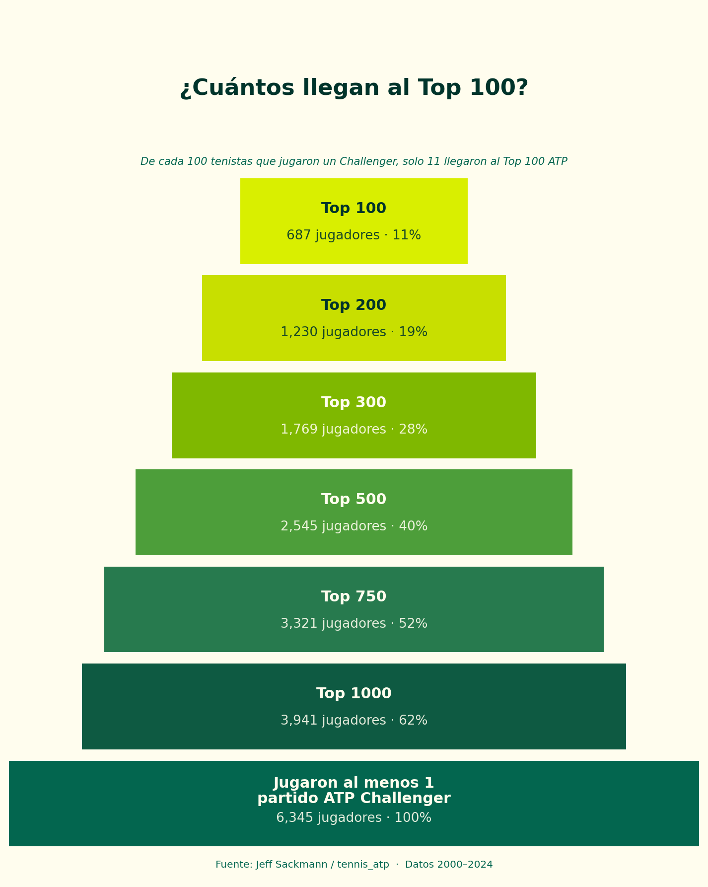
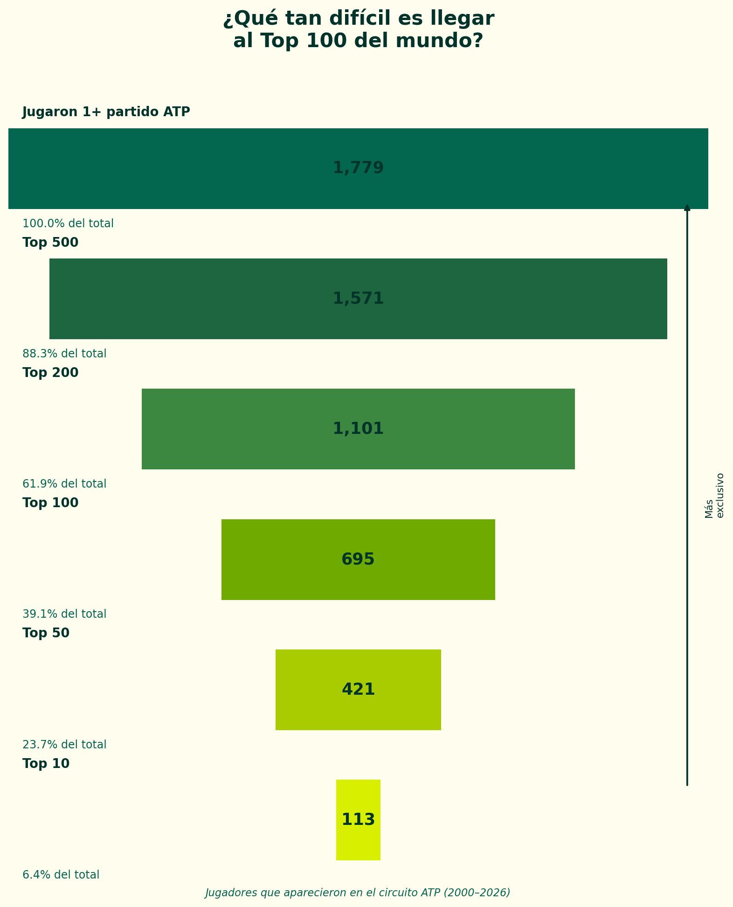

Ser tenista profesional no significa estar en el Top 100. Ni cerca. Cada año miles de jugadores compiten en el circuito Challenger — la antesala del ATP — y la enorme mayoría nunca llega a estar entre los 100 mejores del mundo.
Analizamos todos los jugadores que disputaron al menos un partido Challenger entre 2000 y 2024 para entender qué tan exclusivo es realmente ese umbral.
1 de cada 9
jugadores que juegan un Challenger llegan al Top 100

El filtro del circuito ATP
Si miramos solo el circuito ATP — sin contar challengers — la pirámide también es brutal. De los 1.779 jugadores que disputaron al menos un partido ATP entre 2000 y 2026, solo 113 llegaron al Top 10. Eso es el 6,4% del total.

Los números
6.345
jugadores con al menos 1 partido Challenger
687
11%
llegaron al Top 100
113
6,4%
de jugadores ATP llegaron al Top 10
Por qué importa
Estos números dan contexto a todo lo que pasa en el circuito. Cuando un jugador rankeado #80 pierde en primera ronda de un ATP250, no es un fracaso — es alguien que ya está en el 11% más selectivo del tenis mundial.
Y cuando vemos a un jugador como Fonseca hacer lo que hace con 18 años, los datos ayudan a entender qué tan extraordinario es: no solo está entre los mejores del mundo en su deporte, sino que lo está haciendo antes de que la mayoría de los que lo intentaron tuvieran su oportunidad.